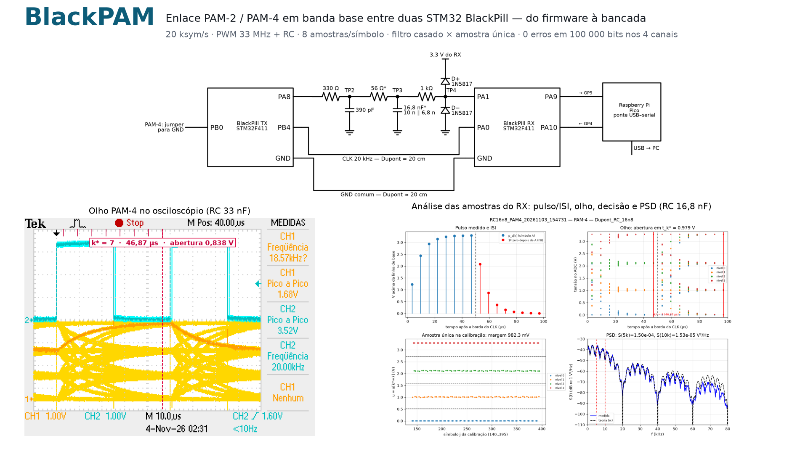

BlackPAM
Enlace PAM-2 / PAM-4 em banda base entre duas STM32 BlackPill, do firmware à bancada. Projeto de Telecomunicações (Eng. Eletrônica, UTFPR, 2026/2).

Resultados medidos
| Canal | τ medido | Olho em k* (PAM-2 / PAM-4) | Erros nos dois detectores |
|---|---|---|---|
| Dupont direto | 0,22 µs | 3,291 / 0,965 V | 0 em 100 000 bits |
| RC 16,8 nF (≈ 300 m CAT5e) | 7,3 µs | 3,273 / 0,979 V | 0 em 100 000 bits |
| RC 33 nF | 13,0 µs | 2,989 / 0,838 V | 0 em 100 000 bits |
| Cabo manga 200 m | ≈ 7,3 µs | 3,262 / 0,970 V | 0 em 100 000 bits |
Zero erros em 100 000 bits indica BER < 3·10⁻⁵ com 95 % de confiança, não BER nula. Nesta bancada o limite foi a ISI, não o ruído.
Guias de estudo
Guia passo a passoDo CubeMX à defesa: fases, código explicado, montagem e ensaios.
Estudo para a defesaTeoria com os números medidos, guias de osciloscópio e glossário.
Detectores e sincronismoTreinamento, k*, amostra única e filtro casado, animados com amostras reais.
Demonstração PAM-2FFT no osciloscópio, olho, 8 amostras, limiares e τ.